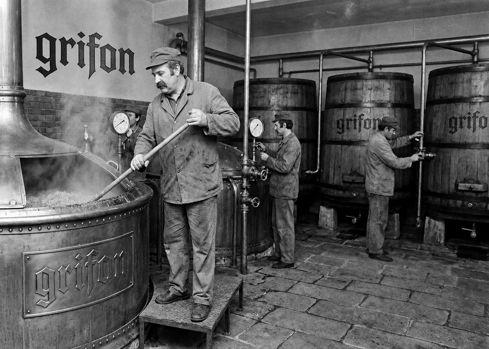
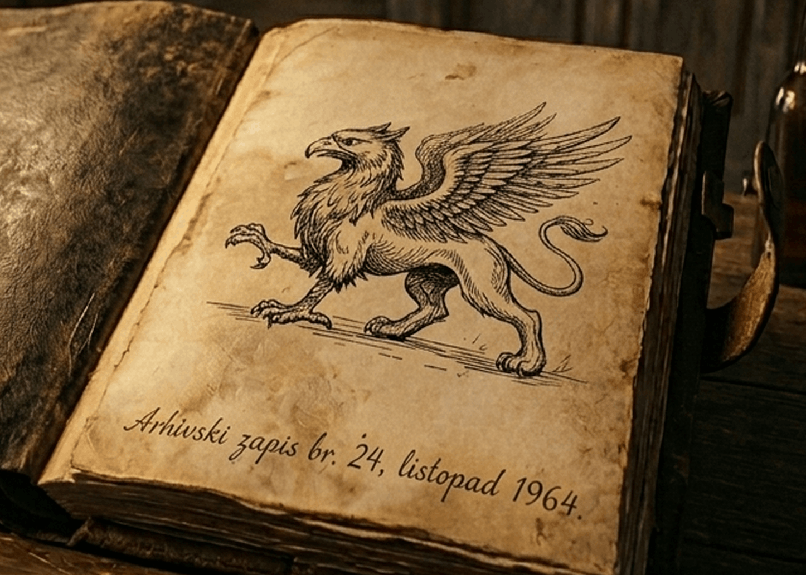
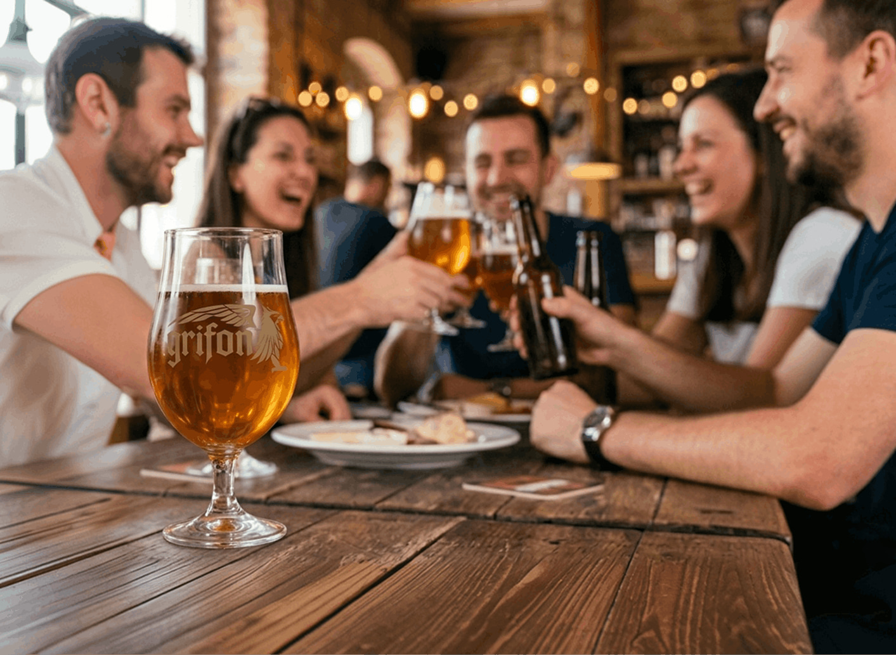

Prvi zapisi o ovom pivu sežu u 1904. godinu, kada je u maloj zanatskoj pivovari na rubu Zagreba započela proizvodnja piva pod nazivom “čuvar snage”. To nije bio komercijalni proizvod, već dio obiteljske pivarske tradicije koji se pažljivo prenosio s generacije na generaciju. Rad pivovare obustavljen je u periodu Drugog svjetskog rata zbog pogibije obiteljskih majstora pivara.

Prije ponovnog pokretanja pivovare, 1960ih, pronađen je originalni recept koji je ostao sačuvan u kožnom dnevniku prvog obiteljskog majstora pivara. Na njegovoj prvoj, prašnjavoj stranici, stajao je ručno ucrtan obris mitskog bića Grifona. Grifon je u obiteljskoj tradiciji bio sinonim za budnog čuvara recepta. Kada je nova generacija 1964. godine ponovno pokrenula proizvodnju, tradiciju su spojili s modernom pivarskom preciznošću. Ime novog piva došlo je prirodno, kao posveta mitskom zaštitniku s korica knjige.

Grifon je živi dokaz da tradicija, kada se čuva s ljubavlju i poštovanjem, nikada ne gubi na vrijednosti. Naš fokus ostaje na vrhunskim, pažljivo odabranim sastojcima. Svako kuhanje nadgleda se s istom strašću i preciznošću kao i 1964. godine. Grifon danas okuplja zajednicu istinskih zaljubljenika u craft kulturu. Nalazimo se u odabranim pubovima, craft barovima i trgovinama koje cijene autentičnost.

Početak priče. Prvi zapisi o proizvodnji izvornog "čuvara snage" na rubu Zagreba.
Prestanak rada originalne pivovare zbog Drugog svjetskog rata.
Ponovno rođenje. Nova generacija pokreće pogone i mitsko biće s korica dnevnika službeno daje ime pivu.
Danas, Grifon ponosno stoji kao simbol beskompromisne kvalitete. I dalje vjerni tradiciji. Godišnje proizvedemo do 50 000 litara.